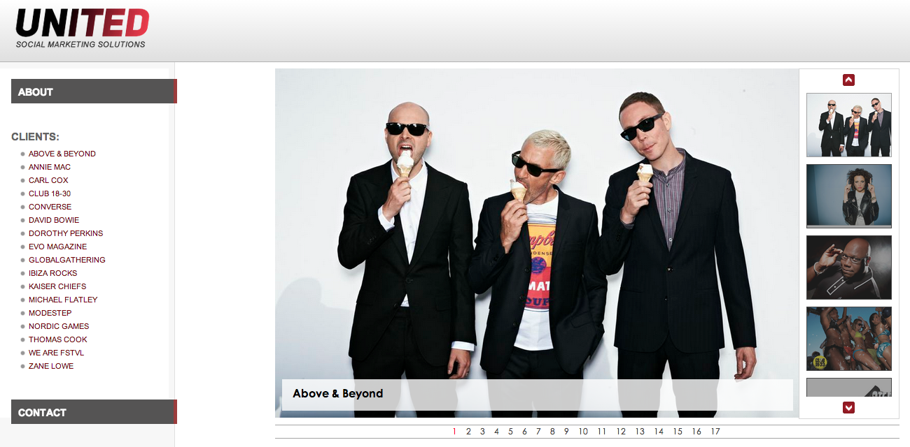
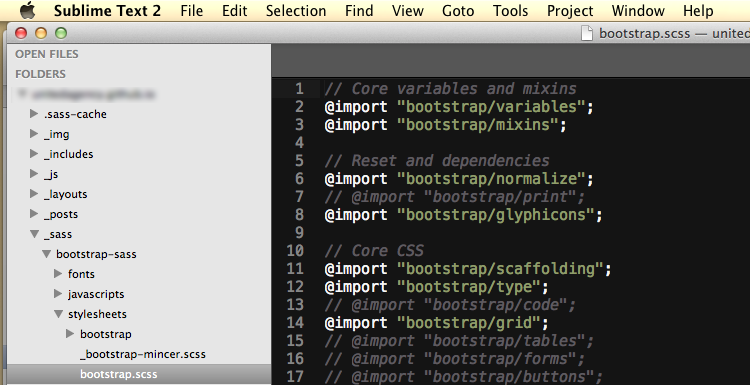
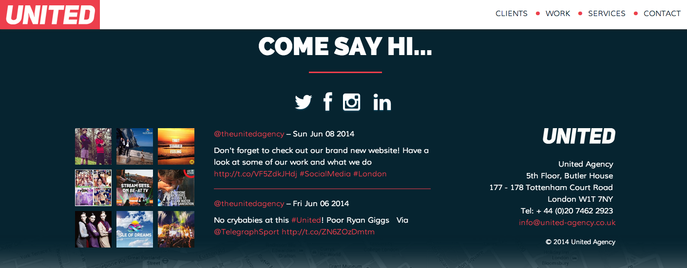

Rebuilding United Website - Development Workflow
Around three weeks ago, we (Ben Chalk and myself) were given the task to redesign and redevelop the United website. The website have not been touched in months and totally required an overhaul. This was a very basic website spanned over a single page – with information about clients, services and contact. So basically by keeping the original set of contents and with a new section showcasing United work/case studies – idea was to give it a whole new vibrant look and make it more widely usable in terms of accessibility and user experience. Here is what we started with:
Design & Wireframes
Ben Chalk worked through design process with mobile-first approach since being responsive was one of the important part of this overhaul. After brainstorming over few mockups and wireframes, we agreed on one to be our final design of website. Then Ben Chalk worked on these wireframes to create the first actual and visual design of the website. Once happy with designs, the project went into development process.
Development:
Since responsiveness was an important part of it so development had to start with mobile-first approach as well. Twitter Bootstrap provides an excellent support for fluid layouts out of the box. To make sure that fluid layouts work as expected on most devices and different screen resolutions, I had following few excellent testing tools on board:
Google Chrome Mobile Emulator provides an excellent set of environment for variety of devices. Resizer provides a comprehensive list of screen resolutions as well as options to define custom.
Since amount of contents of this website were not massive and did not need to be generated dynamically from a CMS or database, I used Jekyll for content delivery. Jekyll also provides a local server to run the tests and confirm outputs. In addition to Jekyll, I used Grunt.js to automate my tasks and make the overflow smooth. Grunt plugins helped in automating the following tasks:
- Optimizing and compressing the images
- Concat SASS files from various packages i.e. Bootstrap, Animate.css, IcoMoon
- Concat, compress and minify the JavaScript packages
- Contents delivery using Jekyll with Grunt
- Watching the file changes automatically to run appropriate tasks
Sass provides an excellent support for manipulating and customizing the default packages without touching the core code. It also helps to concatenate more than one Sass files together as well as to reuse variables, functions, compressing and minifying the CSS output for production use.
Bootstrap Sass provides excellent support for optional selection of modules required for a project. By simply commenting out the modules that are not required saves on output file size and removes the unused CSS from production code.
It is important to understand that one should not include a complete library for few functions but rather tailor it to the needs.
Merging different CSS files into single output file helps to enhance the performance by saving on HTTP round trips.
This awesomeness of selecting only required modules doesn't just stop at Bootstrap or Sass! It continues to other front-end tools used in this project as well i.e. jQuery, jQuery Mobile, Animate.css, Bootstrap.js etc. In addition to these, I also used a selective set of font icons from IcoMoon that enables the social media links at the website. Once again, it is important to only import the glyphs that are required rather than loading a complete font file.
In short, sole purpose of this all “selective” practice is to keep the files size as minimum as required and to keep up with overall performance.
Setup Instagram & Twitter Feeds:
The contact section has feeds from Instagram and Twitter channels.
Instagram Feed:
Instagram API now provides a very convenient way to grab a user feed with a new addition to its /users endpoint. I used jQuery.getJSON method as exampled below to grab the feed. The callback=? parameter here is to get the response in JSONP type to bypass the cross-origin restrictions in a XMLHttpRequest.
var url = "https://api.instagram.com/v1/users/396527045/media/recent/";
url += "?client_id=012345689";
url += "&count=10";
url += "&callback=?";
$.getJSON(url, function(data) {
// Setup Instagram feed here.
});Twitter Feed:
To get a feed from Twitter API requires an OAuth authentication. For this purpose, I used PHP library Fetchwitter that provides an excellent and easy support for Twitter API OAuth authentication. An XMLHttpRequest call (somewhat similar to above example) to Fetchwitter output grabs the response in JSON format. The default tweet coming from this response is plain text so once Twitter feed is setup, it is time to format the plain text to a tweet.
Fetchwitter has built-in method to_tweet that formats plain text into proper tweet with links, hashtags and mentions enabled appropriately. Since I am getting data in JSON format from Fetchwitter, it would be more convenient to format the tweet at front-end than using the built-in to_tweet method. So I decided to use JavaScript at front-end to modify the String prototype and add few methods to it to get the similar formatting output. This prototyping used JavaScript indexOf method which is not available in Internet Explorer 8 therefore to make this String prototype available in IE8 as well I needed an extra prototype manipulation in Array object too. Here is what a plain text formatted into tweet looks like:
See the Pen Format text to tweet using JavaScript String prototyping by Jabran Rafique (@jabranr) on CodePen.
See JavaScript code in JS tab. It is also available as Gist.
Animations:
I like to build stuff for usability and accessibility. To accomplish this, I normally build stuff with simplest and generally available technologies that are available to majority of users through variety of browsers. Then I would enhance the product accordingly with mantra of progressive enhancement by keeping the graceful degradation in mind. The last thing was to add the animations. We wanted to give this website a very subtle parallax type animation on scroll. onscroll is a very heavy event in DOM and to keep its use minimum, I used the jQuery and Animate.css. Animate.css is a wonderful collection of beautiful CSS3 animations. I used the Fading Entrances and Fading Exits modules to create a easing parallax effect when scrolling down on this website. Animations are set to false once these animations are finished running as user scrolls down to the last section of page.
Visit new website at http://united-agency.co.uk!
Updated 11-06-2014: Last section has been updated with details on use of animations in this project.